`stat_bin()` using `bins = 30`. Pick better value `binwidth`.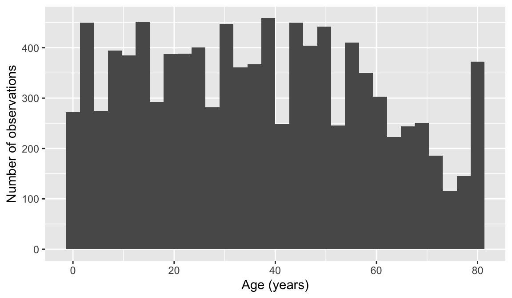
EPI 525
October 30, 2025
To see my math equations properly, you need to download the html file, then open it! One Drive does not show the math correctly!!
A very skilled court stenographer makes one typographical error (typo) per hour on average.
What are the mean and the standard deviation of the number of typos this stenographer makes in an hour?
Mean: 1, standard deviation: 1
Calculate the probability that this stenographer makes at most 3 typos in a given hour.
0.981
Calculate the probability that this stenographer makes at least 5 typos over 3 hours.
0.185
Osteosarcoma is a relatively rare type of bone cancer. It occurs most often in young adults, age 10 - 19; it is diagnosed in approximately 8 per 1,000,000 individuals per year in that age group. In New York City (including all five boroughs), the number of young adults in this age range is approximately 1,400,000.
What is the expected number of cases of osteosarcoma in NYC in a given year?
11.2
What is the probability that 15 or more cases will be diagnosed in a given year?
0.161
The largest concentration of young adults in NYC is in the borough of Brooklyn, where the population in that age range is approximately 450,000. What is the probability of 10 or more cases in Brooklyn in a given year?
0.004
Suppose that in a given year, 10 cases of osteosarcoma were observed in NYC, with all 10 cases occurring among young adults living in Brooklyn. An official from the NYC Public Health Department claims that the probability of this event (that is, the probability of 10 or more cases being observed, and all of them occurring in Brooklyn) is what was calculated in part c). Is the official correct? Explain your answer. You may assume that your answer to part c) is correct. This question can be answered without doing any calculations.
Official is not correct
Suppose that over five years, there was one year in which 10 or more cases of osteosarcoma were observed in Brooklyn. Is the probability of this event equal to the probability calculated in part c)? Explain your answer.
0.01979
The scatterplot below shows the relationship between per capita income (in thousands of dollars) and percent of population with a bachelor’s degree in 3,143 counties in the US in 2010.
What are the explanatory and response variables?
Describe the relationship between the two variables. Make sure to discuss unusual observations, if any.
Can we conclude that having a bachelor’s degree increases one’s income?
Indicate which of the plots show
Plot 4
Researchers studying anthropometry collected body girth measurements and skeletal diameter measurements, as well as age, weight, height and gender, for 507 physically active individuals. The histogram below shows the sample distribution of heights in centimeters.
What is the point estimate for the average height of active individuals?
171.1 cm
What is the point estimate for the standard deviation of the heights of active individuals? What about the IQR?
\(s=9.4\)
Is a person who is 1m 80cm (180 cm) tall considered unusually tall? And is a person who is 1m 55cm (155cm) considered unusually short? Explain your reasoning.
Not considered unusually tall (or short)
The researchers take another random sample of physically active individuals. Would you expect the mean and the standard deviation of this new sample to be the ones given above? Explain your reasoning.
No
The sample means obtained are point estimates for the mean height of all active individuals, if the sample of individuals is equivalent to a simple random sample. What measure do we use to quantify the variability of such an estimate? Compute this quantity using the data from the original sample under the condition that the data are a simple random sample.
\(SE =0.417\)
The distribution of the number of eggs laid by a certain species of hen during their breeding period is on average, 35 eggs, with a standard deviation of 18.2. Suppose a group of researchers randomly samples 45 hens of this species, counts the number of eggs laid during their breeding period, and records the sample mean. They repeat this 1,000 times, and build a distribution of sample means.
What is this distribution called?
Would you expect the shape of this distribution to be symmetric, right skewed, or left skewed? Explain your reasoning.
Symmetric
Calculate the variability of this distribution and state the appropriate term used to refer to this value.
\(2.713\)
Suppose the researchers’ budget is reduced and they are only able to collect random samples of 10 hens.The sample mean of the number of eggs is recorded, and we repeat this 1,000 times, and build a new distribution of sample means. How will the variability of this new distribution compare to the variability of the original distribution?
NHANES R package.The National Health and Nutrition Examination Survey (NHANES) is a survey conducted annually by the US National Center for Health Statistics (NCHS). While the original data uses a survey design that oversamples certain subpopulations, the data have been reweighted to undo oversampling effects and can be treated as if it were a simple random sample from the American population.
?NHANES.
NHANES package to see the help files.mean(), sd(), median(), etc.), you will get NA as the result if there are missing values.na.rm = TRUE option within the parentheses of the command: mean(dataset$variablename, na.rm = TRUE).Hint: Use functions covered in the R lesson on Basics in R (part 2)
10,000 rows and 76 columns
This will require a new function called unique(). For example, if I want the unique ages (from variable Age) from the dataset, I can use unique(NHANES$Age)
Then I can use the function, length() to see how long the list of unique IDs is. length(unique(NHANES$Age))
6,779 unique IDs
You don’t need to need to use exact stat verbage for this one. Think: is it evenly distributed? Does it trail off? Does it seem like most ages are represented equally? Is there a reason why there’s more 80yo’s than 79 yo’s?
Data visualizations options:
`stat_bin()` using `bins = 30`. Pick better value `binwidth`.
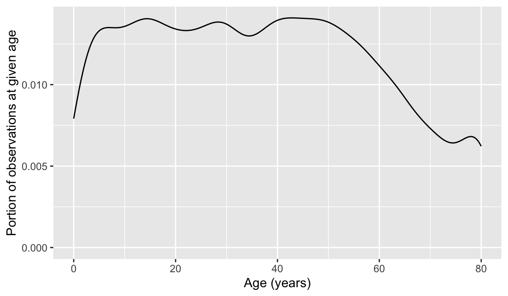
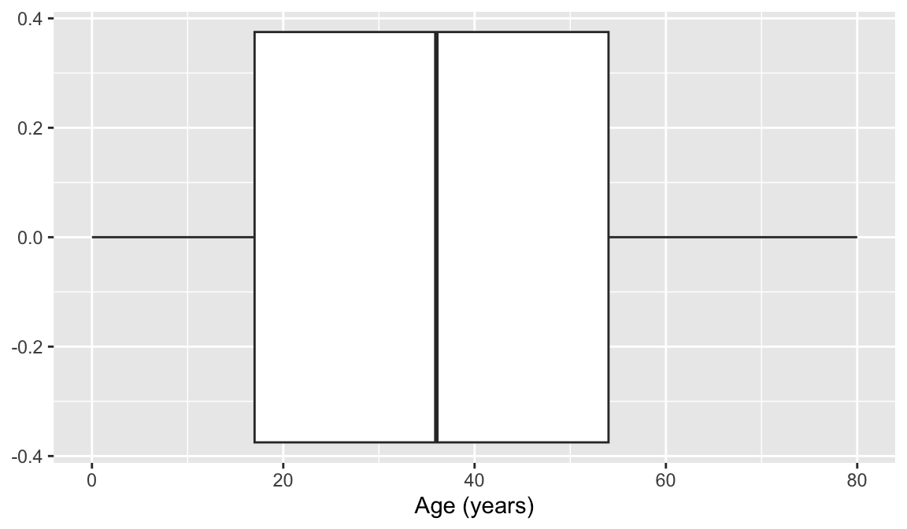
For this one, we learned a few more terms and phrases to describe data. Try them out!
Data visualizations options:
`stat_bin()` using `bins = 30`. Pick better value `binwidth`.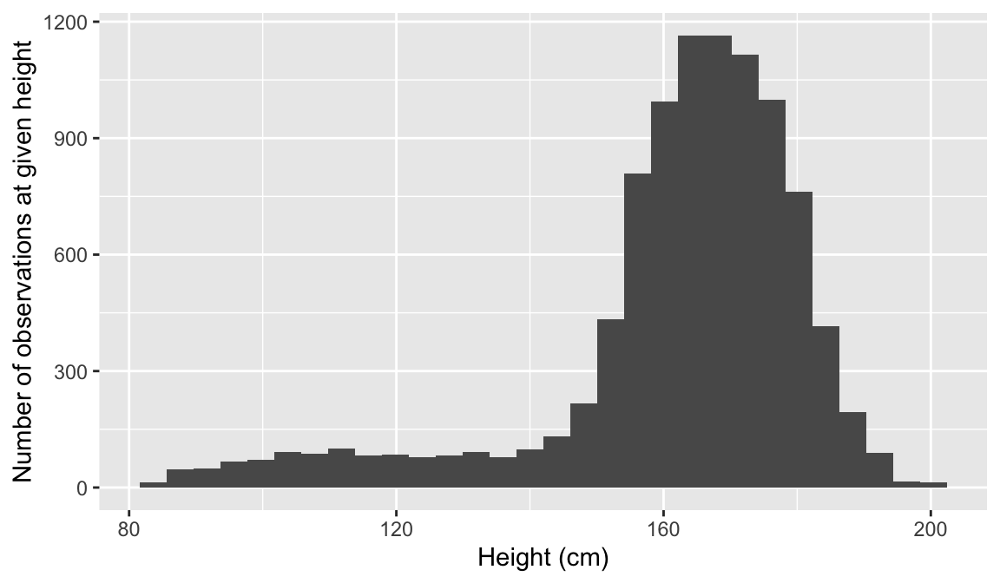
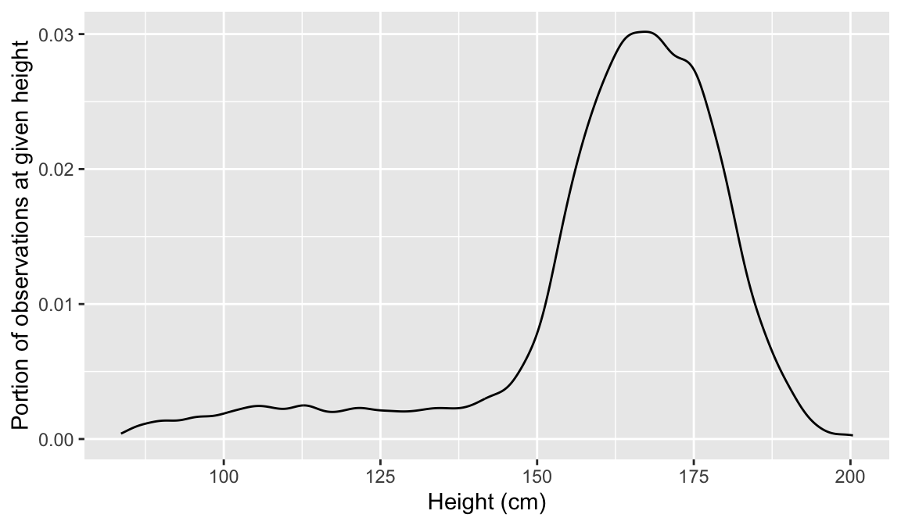
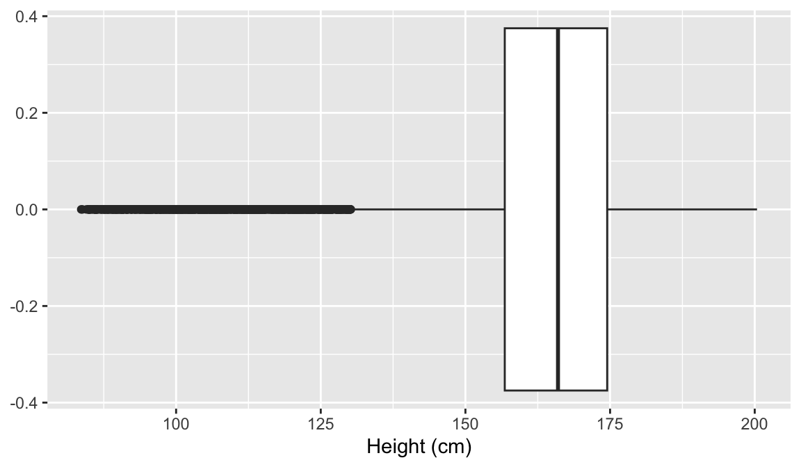
PovertyWrite a sentence explaining the median and IQR in the context of these data. Make sure to look up what Poverty means in this dataset so you can give the appropriate context!
Median:
[1] 2.7IQR:
[1] 3.47You can use whatever data visualization tool to look at this. Hint: age and height are both numeric variables!
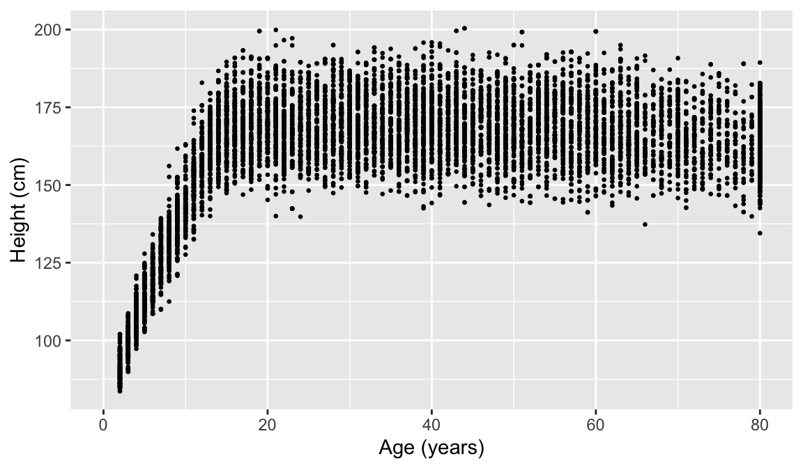
This may require you to use a few options to visualize the data! Also, hours slept is numeric, but there’s only 11 unique values. It might be interesting to try out the visualization methods for two categorical variables.
Options to look at the relationship:
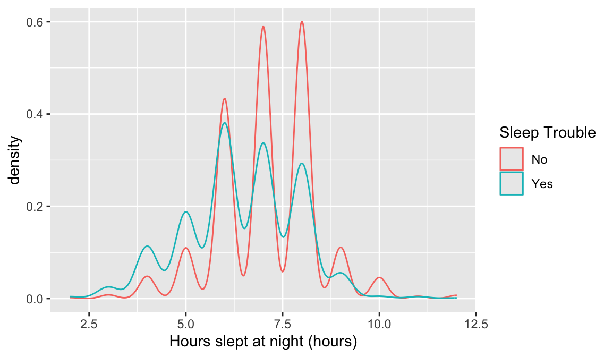
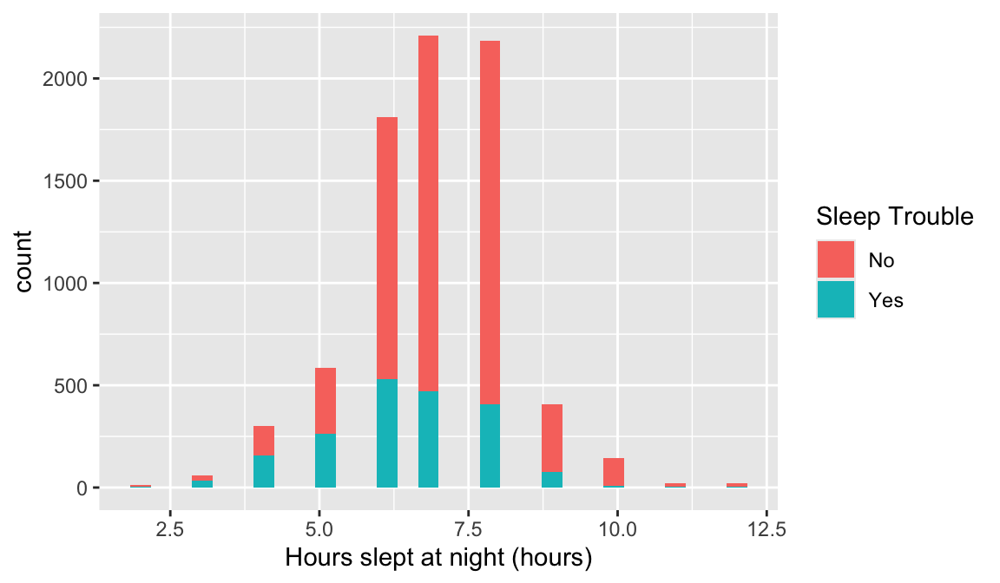
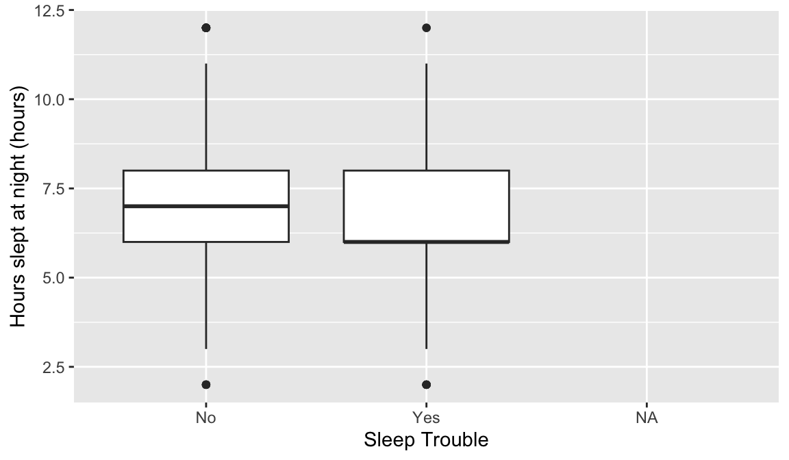
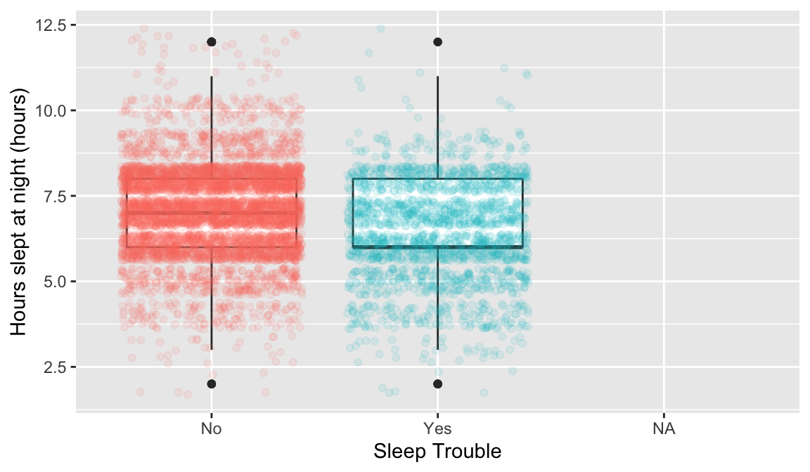
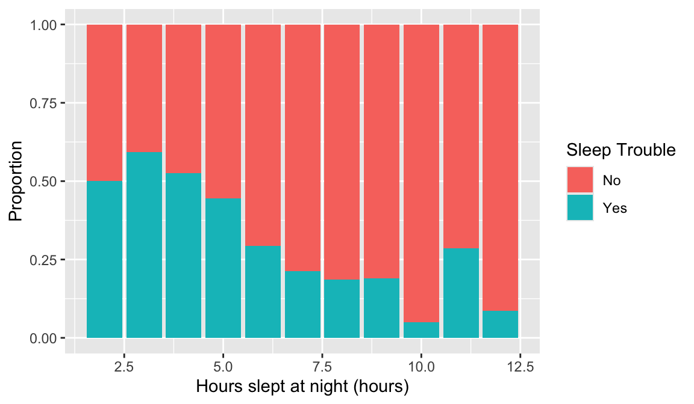